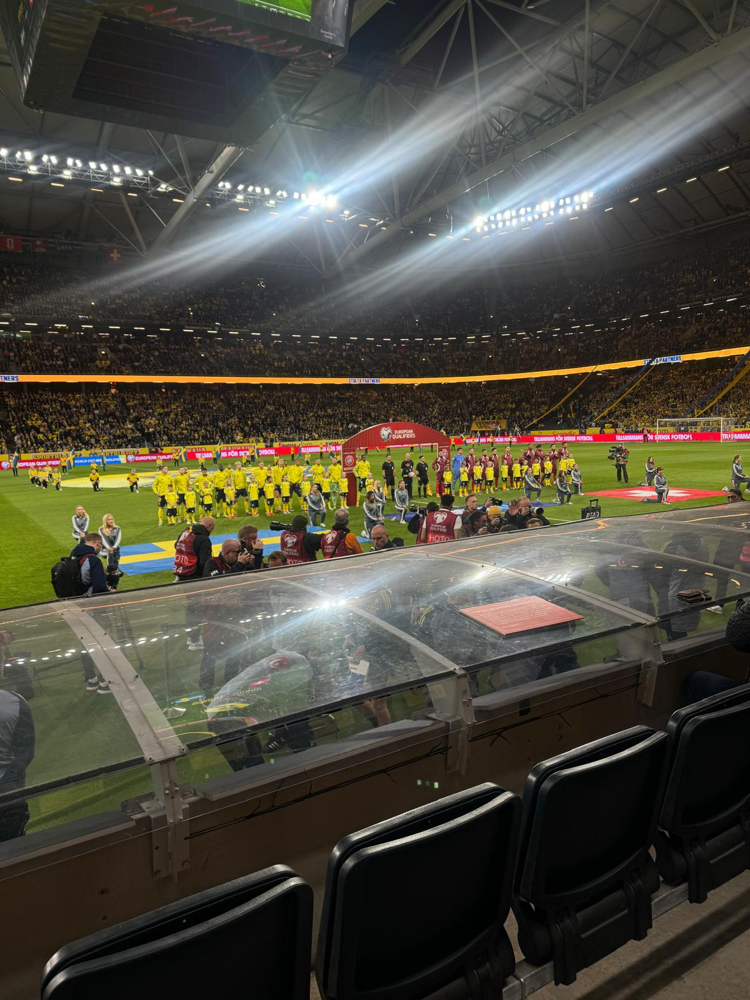
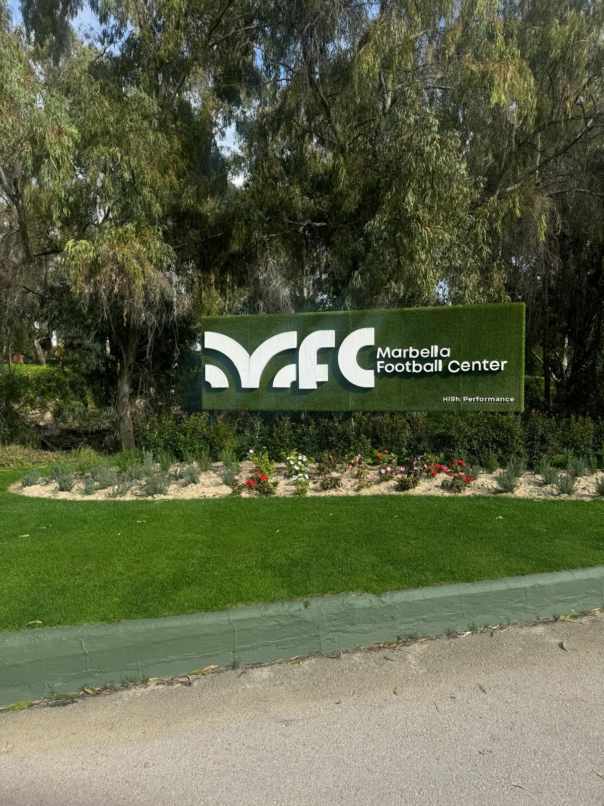

Klubb.
Klubben bygger miljön. Vägledningen stärker individens förmåga att leda sig själv i den.
Människan är grunden.
Personlig vägledning i självledarskap med Rickson Mansiamina. För en eller flera individer i er klubb.
Tillsammans med individen kommer vi överens om vad som får återkopplas till klubben.

Förändra. Befästa. Bygga vidare.
När tankarna tar fokus från uppgiften.
Självtvivel, övertänkande och frustration kan ta uppmärksamhet från det som händer. Vi undersöker vad som drar och tränar på att hitta tillbaka till uppgiften.
När sammanhanget förändras.
En ny roll, förändrad speltid eller en ny miljö kan pröva individens riktning. Vi tydliggör vad som går att påverka och vad som behöver få fokus.
När det går bra.
När förtroendet och ansvaret växer behöver självledarskapet följa med. Vi förvaltar det som fungerar och förbereder för nästa steg.
Ett eget utrymme för individen.
Vägledningen kompletterar klubbens ledarskap. Individen får utrymme att tänka högt, pröva perspektiv och förstå sig själv bättre.
Vi tydliggör min roll och samarbetets ramar från start.

Arbetet följer med ut i vardagen.
Samtalen tar avstamp i det individen möter i träning, match och vardag. Tillsammans väljer vi ett tydligt fokus och vad som ska prövas.
Ett eget digitalt Träningsfält.
Varje individ får en egen digital arbetsyta med aktuellt fokus, sammanfattningar och personligt material.
Det ger stöd inför situationer och för reflektion efteråt. Tidigare lärdomar finns kvar att bygga vidare på.
I samtalen följer vi upp vad individen har prövat, vad som hjälpt och vad som behöver fortsätta tränas. Vi håller också kontakt mellan samtalen enligt vårt överenskomna upplägg.
Arbetet bygger på Differencismen och ska stärka individens förmåga att leda sig själv över tid.

Så börjar vi.
Vi börjar med ett samtal om klubbens behov och vem vägledningen kan vara relevant för.
Därefter möter jag individen. Om samarbetet passar kommer vi tillsammans med klubben överens om upplägg, period och uppföljning.
LED DIG SJÄLV. FÖRST.